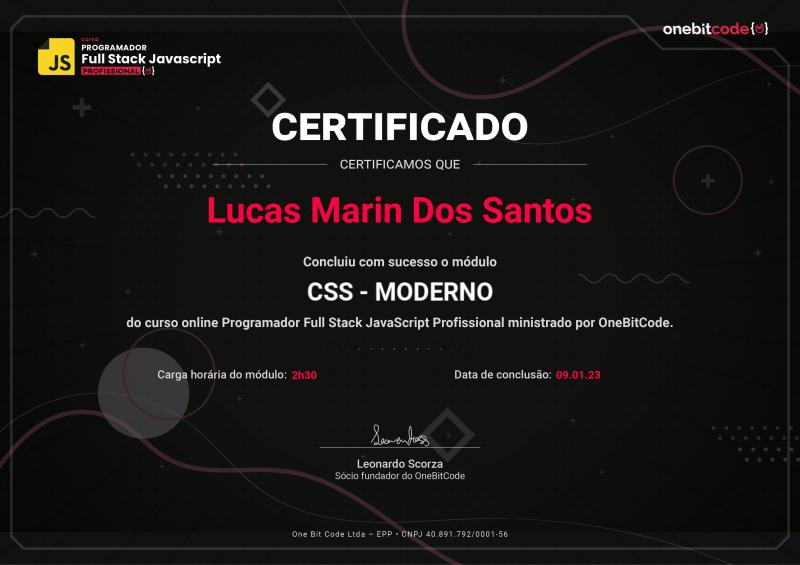
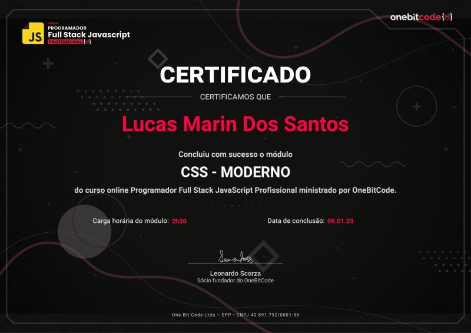
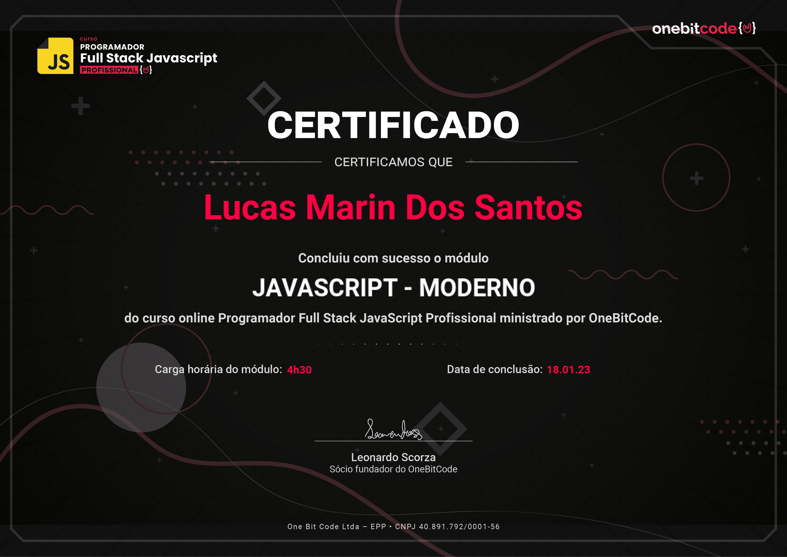
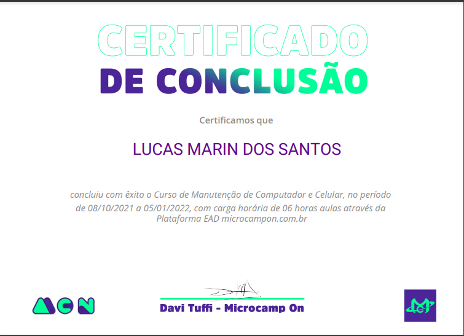
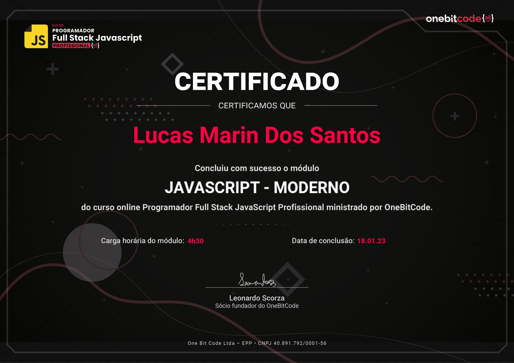
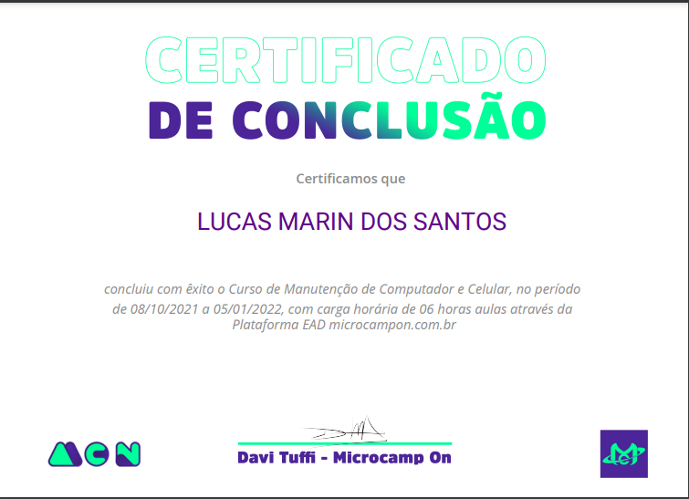

Oi, Eu sou
Lucas Marin.
Desenvolvedor de Software
Introdução
Meu nome é Lucas e sou desenvolvedor front-end, estudando para me tornar full-stack. Bem vindo ao meu portifólio, nele você encontrará todos os meus projetos desenvolvidos até o momento, minhas informações academicas/profissionais e minhas redes sociais caso queira entrar em contato !

 


 


